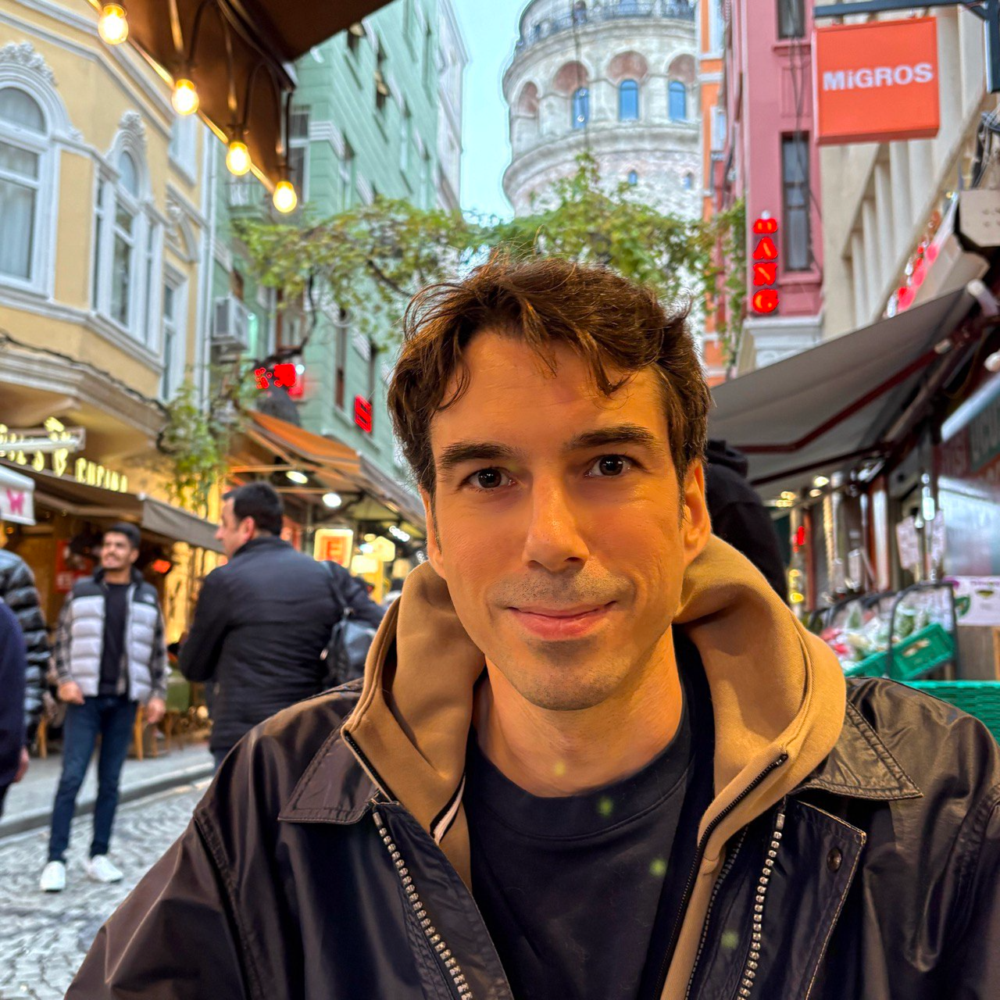

Home
All things are possible, perhaps nothing is certain, but some things are more likely than others.
I am a CNRS researcher (HDR) at Université Côte d’Azur, a 3IA Côte d'Azur Chair and a member of the COATI Project-Team between INRIA and I3S.
 https://orcid.org/0000-0002-8755-3892
https://orcid.org/0000-0002-8755-3892About me
Before accepting a CNRS position in 2018, I've been a fellow of the Simons Institute for the Theory of Computing in the Brain and Computation Program and a postdoctoral fellow at the Max Planck Institute for Informatics. In 2019, I've received the Best Italian Young Researcher in Theoretical Computer Science award by the Italian Chapter of the European Association of Theoretical Computer Science, from which I also received the Best PhD Thesis in Theoretical Computer Science in 2017. In 2016, I've been a recipient of the Best Student Paper Award at the European Symposium on Algorithms. For more information (projects, academic service etc.), see my CV.
Research
I'm interested in machine learning and neuroscience, with a focus on theoretical aspects of multi-agent systems and artificial neural networks. I give a quick overview of my research here.